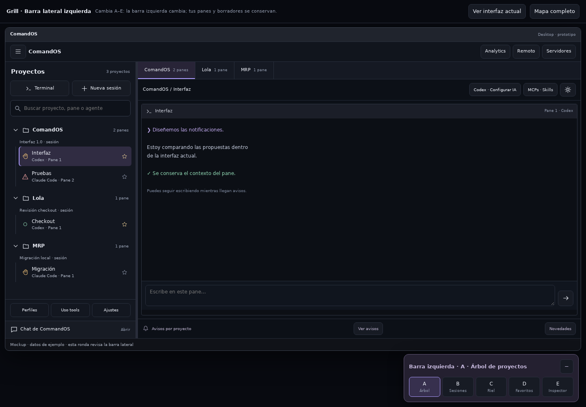
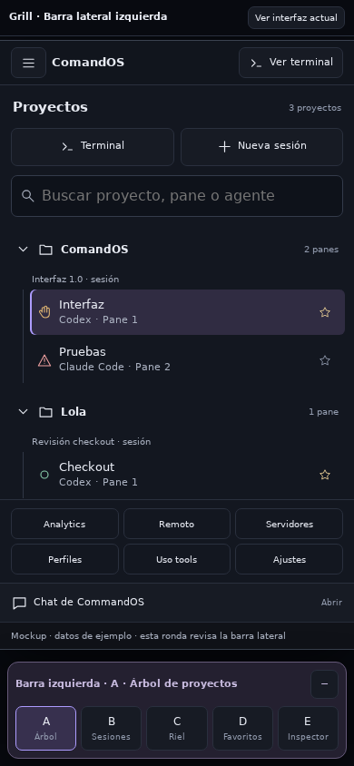
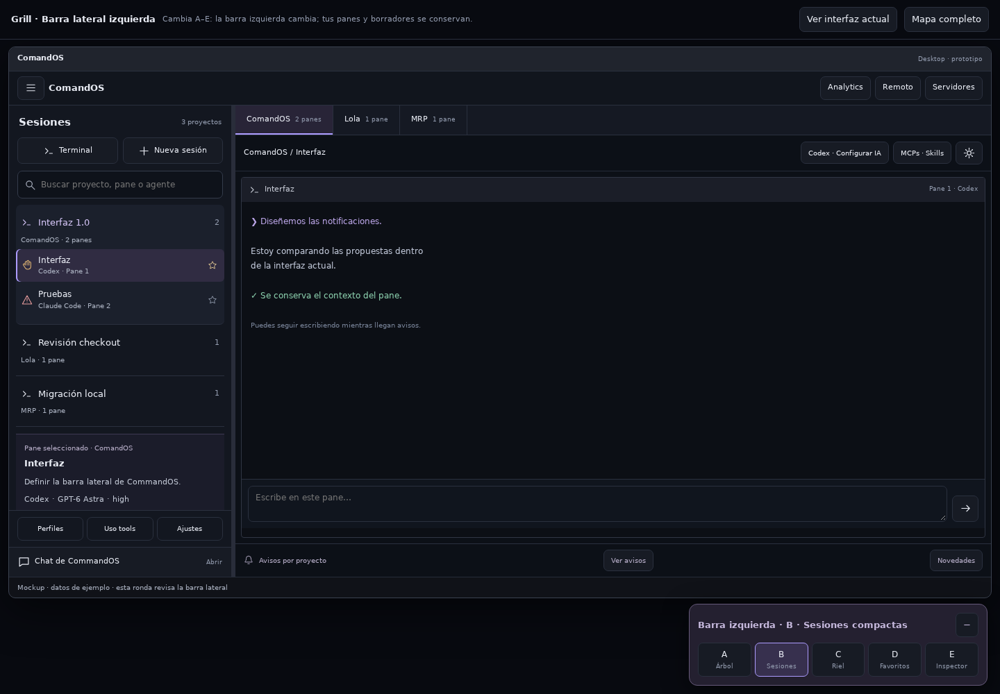
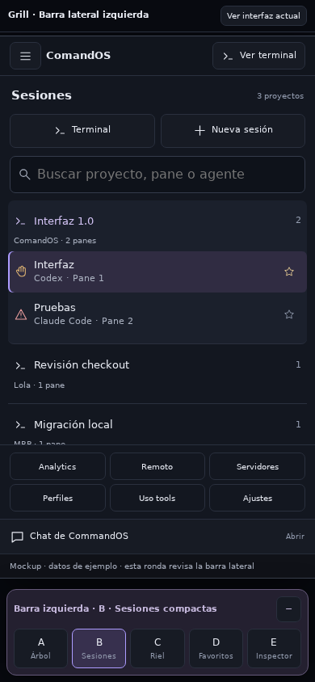
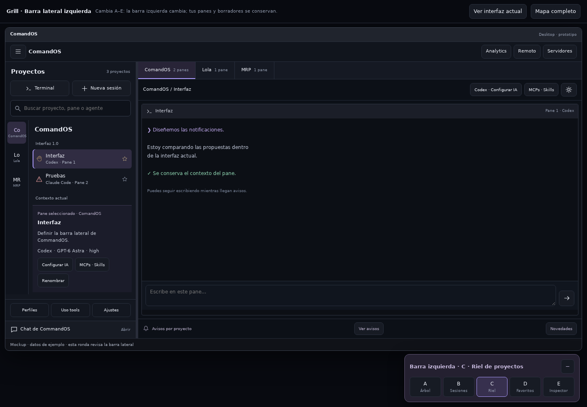
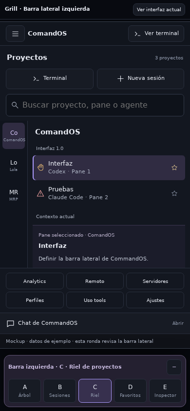
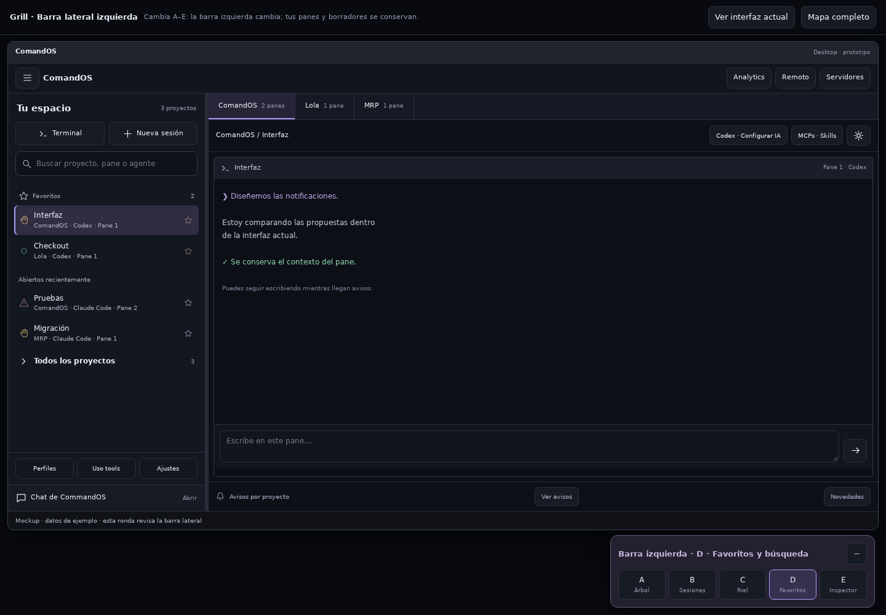
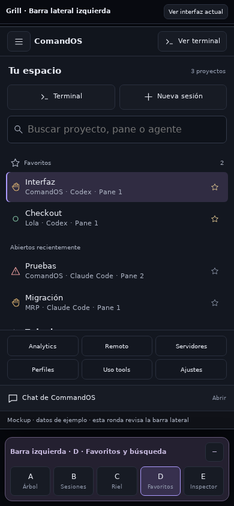
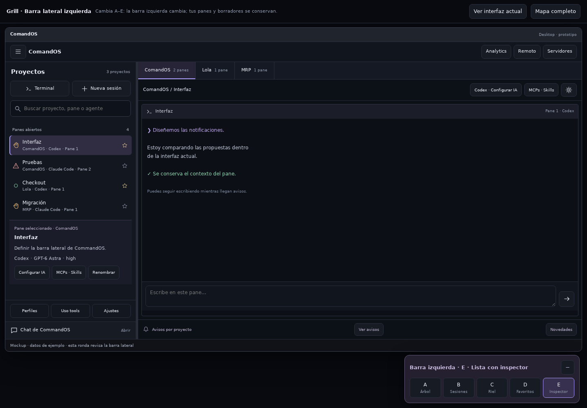
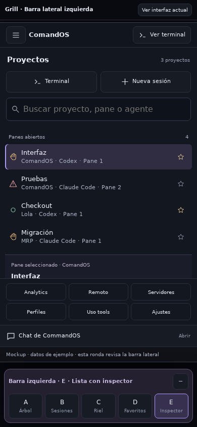

Capturas de Chrome sin interfaz gráfica con datos y conexiones simulados. Fuentes y alcance.
Un cambio por panelVista de sesionesPerfiles de inicioEntrada táctilSeleccionar y copiarEscritorio
Lector de novedades de IA
Prototipo con contenido ficticio. Capturas de Chrome remoto en la Mac mini, transferidas a este equipo. Comparar las cinco propuestas.
A · Lista + lector · EscritorioA · Lista + lector · MóvilB · Edición continua · EscritorioB · Edición continua · MóvilC · Junto a la terminal · EscritorioC · Junto a la terminal · MóvilD · Temas desplegables · EscritorioD · Temas desplegables · MóvilE · Una por una · EscritorioE · Una por una · Móvil
Comparación anterior sin variante elegida. Jesús descartó la jerarquía como criterio y retiró el chat del diseño. Estas capturas conservan la propuesta anterior. Capturas de Chrome remoto en la Mac mini, transferidas a este equipo. Probar A–E.

A · Árbol de proyectos · Escritorio

A · Árbol de proyectos · Móvil

B · Sesiones compactas · Escritorio

B · Sesiones compactas · Móvil

C · Riel de proyectos · Escritorio

C · Riel de proyectos · Móvil

D · Favoritos y búsqueda · Escritorio

D · Favoritos y búsqueda · Móvil

E · Lista con inspector · Escritorio

E · Lista con inspector · Móvil
Retirada del chat en el prototipo
Se retira el chat y el selector duplicado de MCPs de la barra. La estructura restante pertenece a la exploración archivada; la función contextual sigue en discusión.